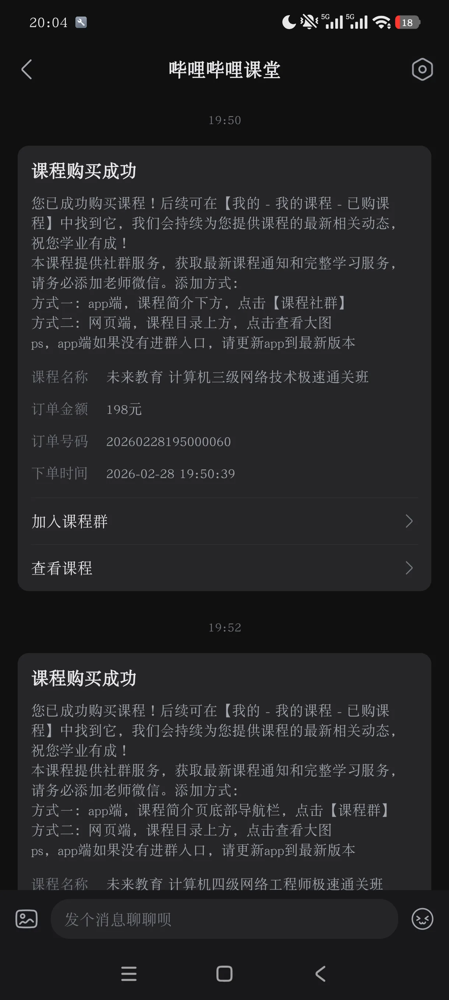
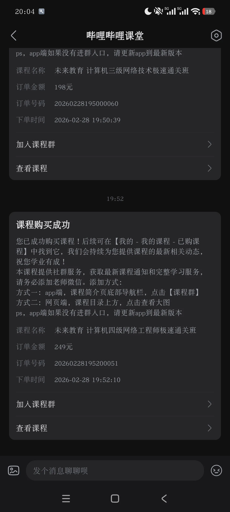
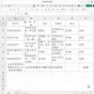

Journal · 2026-02-28
微信聊天记录
吉姆哈克 : 学长，祝你新年万事清欢，所愿皆成真！！！ 2026年2月28日 13:54 吉姆哈克 : 我又来打探消息了。。。 2026年2月28日 13:54 吉姆哈克 : 就是，我本学期的课程，有一点点多 2026年2月28日 13:55 吉姆哈克 : [图片] 2026年2月28日 13:55 吉姆哈克 : [图片] 2026年2月28日 13:55 吉姆哈克 : 大二下学期，本专业的课程，我该如何应对？ 2026年2月28日 13:55 吉姆哈克 : 哪些是知识课？哪些是理论课？至于政治课，我已经知道了 2026年2月28日 13:56 吉姆哈克 : 哪些是PPT teacher？哪些是Chat teacher？哪些是Test teacher？ 2026年2月28日 13:57 方是钰 : 新年快乐学弟[烟花] 引用：学长，祝你新年万事清欢，所愿皆成真！！！ 2026年2月28日 14:34 方是钰 : 稍等一下哈 我这几天比较忙，有空再慢慢回你噢 引用：大二下学期，本专业的课程，我该如何应对？ 2026年2月28日 14:35 方是钰 : [表情] 2026年2月28日 14:36
吉姆哈克 : Senior, wishing you a New Year of quiet joys, may all your wishes come true!!! 2026年2月28日 13:54 吉姆哈克 : I'm back scouting for information again... 2026年2月28日 13:54 吉姆哈克 : It's just that my course load this semester is a touch heavy 2026年2月28日 13:55 吉姆哈克 : [图片] 2026年2月28日 13:55 吉姆哈克 : [图片] 2026年2月28日 13:55 吉姆哈克 : In the second semester of sophomore year, how should I tackle my major courses? 2026年2月28日 13:55 吉姆哈克 : Which are knowledge courses, which are theory courses? As for the politics courses, I already know 2026年2月28日 13:56 吉姆哈克 : Which are PPT teachers, which are Chat teachers, which are Test teachers? 2026年2月28日 13:57 方是钰 : Happy New Year, junior [烟花] Quote: Senior, wishing you a New Year of quiet joys, may all your wishes come true!!! 2026年2月28日 14:34 方是钰 : Hold on a sec, I've been busy these days, I'll reply properly when I'm free Quote: In the second semester of sophomore year, how should I tackle my major courses? 2026年2月28日 14:35 方是钰 : [表情] 2026年2月28日 14:36
吉姆哈克 : Aîné, je te souhaite une nouvelle année aux plaisirs simples, que tous tes vœux se réalisent ! ! ! 2026年2月28日 13:54 吉姆哈克 : Je reviens aux nouvelles... 2026年2月28日 13:54 吉姆哈克 : Voilà, mes cours ce semestre sont un tout petit peu nombreux 2026年2月28日 13:55 吉姆哈克 : [图片] 2026年2月28日 13:55 吉姆哈克 : [图片] 2026年2月28日 13:55 吉姆哈克 : Au second semestre de deuxième année, comment aborder les cours de ma filière ? 2026年2月28日 13:55 吉姆哈克 : Lesquels sont des cours de connaissances, lesquels des cours théoriques ? Pour les cours de politique, je sais déjà 2026年2月28日 13:56 吉姆哈克 : Lesquels sont des PPT teacher, des Chat teacher, des Test teacher ? 2026年2月28日 13:57 方是钰 : Bonne année, petit [烟花] Citation : Aîné, je te souhaite une nouvelle année aux plaisirs simples, que tous tes vœux se réalisent ! ! ! 2026年2月28日 14:34 方是钰 : Attends un peu, je suis occupé ces jours-ci, je te répondrai tranquillement quand j'aurai le temps Citation : Au second semestre de deuxième année, comment aborder les cours de ma filière ? 2026年2月28日 14:35 方是钰 : [表情] 2026年2月28日 14:36
吉姆哈克 : Senior, ich wünsche dir ein neues Jahr voll stiller Freuden, mögen alle Wünsche in Erfüllung gehen!!! 2026年2月28日 13:54 吉姆哈克 : Ich hole mir wieder Informationen... 2026年2月28日 13:54 吉姆哈克 : Es ist nur so, dass ich dieses Semester ein bisschen viele Kurse habe 2026年2月28日 13:55 吉姆哈克 : [图片] 2026年2月28日 13:55 吉姆哈克 : [图片] 2026年2月28日 13:55 吉姆哈克 : Im zweiten Semester des zweiten Studienjahrs, wie gehe ich die Kurse meines Hauptfachs an? 2026年2月28日 13:55 吉姆哈克 : Welche sind Wissenskurse, welche Theoriekurse? Die Politikkurse kenne ich schon 2026年2月28日 13:56 吉姆哈克 : Welche sind PPT-Lehrer, welche Chat-Lehrer, welche Test-Lehrer? 2026年2月28日 13:57 方是钰 : Frohes neues Jahr, Junior [烟花] Zitat: Senior, ich wünsche dir ein neues Jahr voll stiller Freuden, mögen alle Wünsche in Erfüllung gehen!!! 2026年2月28日 14:34 方是钰 : Warte kurz, ich bin in diesen Tagen beschäftigt, ich antworte in Ruhe, wenn ich Zeit habe Zitat: Im zweiten Semester des zweiten Studienjahrs, wie gehe ich die Kurse meines Hauptfachs an? 2026年2月28日 14:35 方是钰 : [表情] 2026年2月28日 14:36
欧成静 : 欧成静刚刚把你添加到通讯录，现在可以开始聊天了。 2026年2月28日 20:03 欧成静 : 嗨同学你好呀~欢迎加入我们的计算机极速通关班课程的学习，希望你在之后的课程学习中有所收获，并顺利通过该科目的考试 ，接下来请按如下步骤操作喔~~ 1.请先将在B站购买的订单截图发给我审核喔~~ 2.审核通过后会将您拉入学习群中和其他小伙伴一起学习，记得在【群公告】中下载学习资料喔~~ PS：学习资料包括：未来教育考试系统V4.0（激活码待审核后发放）、电子资料以及黄金考点手册等； 2026年2月28日 20:03
欧成静 : Ou Chengjing just added you to contacts, you can start chatting now. 2026年2月28日 20:03 欧成静 : Hi there, hello~ Welcome to our Computer Speed-Pass Course; we hope you gain a lot in the upcoming lessons and pass this subject smoothly. Please follow these steps next~~ 1.First send me a screenshot of the order you purchased on Bilibili for review~~ 2.Once approved you'll be added to the study group to learn with everyone; remember to download the materials in the [Group Announcement]~~ PS: The materials include: Weilai Education Exam System V4.0 (activation code issued after review), electronic materials, the Gold Key Points Handbook, etc.; 2026年2月28日 20:03
欧成静 : Ou Chengjing vient de t'ajouter à ses contacts, vous pouvez maintenant discuter. 2026年2月28日 20:03 欧成静 : Salut cher étudiant~ Bienvenue dans notre formation Cours Express Informatique, nous espérons que tu en tireras beaucoup et réussiras l'examen de cette matière. Suis ensuite ces étapes~~ 1.Envoie-moi d'abord une capture de la commande achetée sur Bilibili pour validation~~ 2.Une fois validée tu seras ajouté au groupe de travail pour étudier avec les autres, pense à télécharger les supports dans l'[Annonce du groupe]~~ PS : Les supports comprennent : le système d'examen Weilai Education V4.0 (code d'activation envoyé après validation), des documents électroniques et le Manuel des points clés en or, etc. ; 2026年2月28日 20:03
欧成静 : Ou Chengjing hat dich gerade zu den Kontakten hinzugefügt, ihr könnt jetzt chatten. 2026年2月28日 20:03 欧成静 : Hallo liebe/r Studierende/r~ Willkommen zu unserem Computer-Expresskurs; wir hoffen, du nimmst aus den kommenden Stunden viel mit und bestehst diese Prüfung. Bitte gehe danach wie folgt vor~~ 1.Schick mir zuerst einen Screenshot der auf Bilibili gekauften Bestellung zur Prüfung~~ 2.Nach Freigabe wirst du in die Lerngruppe aufgenommen; denk daran, die Materialien in der [Gruppenankündigung] herunterzuladen~~ PS: Die Materialien umfassen: Weilai-Bildung-Prüfungssystem V4.0 (Aktivierungscode nach Prüfung), elektronische Unterlagen, das Goldene-Schwerpunkte-Handbuch usw.; 2026年2月28日 20:03


吉姆哈克 : 你是三级的，还是四级的老师？ 2026年2月28日 20:04 吉姆哈克 : 怎么两个二维码，扫出来的都是你？ 2026年2月28日 20:05 吉姆哈克 : [图片] 2026年2月28日 20:05 吉姆哈克 : [图片] 2026年2月28日 20:05 吉姆哈克 : 有人吗？我需要讲义。。。 2026年2月28日 21:20
吉姆哈克 : Are you the Level 3 teacher or the Level 4 teacher? 2026年2月28日 20:04 吉姆哈克 : How come both QR codes scan to you? 2026年2月28日 20:05 吉姆哈克 : [图片] 2026年2月28日 20:05 吉姆哈克 : [图片] 2026年2月28日 20:05 吉姆哈克 : Anyone there? I need the handout... 2026年2月28日 21:20
吉姆哈克 : Tu es le prof du niveau 3 ou celui du niveau 4 ? 2026年2月28日 20:04 吉姆哈克 : Comment ça se fait que les deux QR codes mènent à toi ? 2026年2月28日 20:05 吉姆哈克 : [图片] 2026年2月28日 20:05 吉姆哈克 : [图片] 2026年2月28日 20:05 吉姆哈克 : Il y a quelqu'un ? J'ai besoin du poly... 2026年2月28日 21:20
吉姆哈克 : Bist du der Lehrer für Stufe 3 oder für Stufe 4? 2026年2月28日 20:04 吉姆哈克 : Wieso führen beide QR-Codes zu dir? 2026年2月28日 20:05 吉姆哈克 : [图片] 2026年2月28日 20:05 吉姆哈克 : [图片] 2026年2月28日 20:05 吉姆哈克 : Ist jemand da? Ich brauche das Skript... 2026年2月28日 21:20
吉姆哈克 : 学长好，祝你新年快乐，所愿皆成真！！！ 2026年2月28日 21:31 吉姆哈克 : 我又来打探消息了。。。 2026年2月28日 21:31
吉姆哈克 : Hi senior, happy new year, may all your wishes come true!!! 2026年2月28日 21:31 吉姆哈克 : I'm back again to fish for news... 2026年2月28日 21:31
吉姆哈克 : Salut l'aîné, bonne année, que tous tes vœux se réalisent !!! 2026年2月28日 21:31 吉姆哈克 : Je reviens aux nouvelles... 2026年2月28日 21:31
吉姆哈克 : Hallo Senior, frohes neues Jahr, mögen alle Wünsche in Erfüllung gehen!!! 2026年2月28日 21:31 吉姆哈克 : Ich bin wieder da, um Neuigkeiten zu sammeln... 2026年2月28日 21:31

吉姆哈克 : 我想问一下，这些书真的有用吗？[发呆][发呆][发呆] 2026年2月28日 21:32 吉姆哈克 : 谢谢学长，打扰你了，我已经搞清楚啦！ 2026年2月28日 21:34 吉姆哈克 : 啦啦啦，没事啦！ 2026年2月28日 21:34
吉姆哈克 : I'd like to ask, are these books actually useful? [发呆][发呆][发呆] 2026年2月28日 21:32 吉姆哈克 : Thanks senior, sorry to bother you, I've got it sorted now! 2026年2月28日 21:34 吉姆哈克 : Tra-la-la, all good now! 2026年2月28日 21:34
吉姆哈克 : Je voudrais demander, ces livres servent vraiment à quelque chose ? [发呆][发呆][发呆] 2026年2月28日 21:32 吉姆哈克 : Merci l'aîné, désolé de t'avoir dérangé, j'ai tout compris ! 2026年2月28日 21:34 吉姆哈克 : Tralala, c'est réglé ! 2026年2月28日 21:34
吉姆哈克 : Ich wollte fragen, sind diese Bücher wirklich nützlich? [发呆][发呆][发呆] 2026年2月28日 21:32 吉姆哈克 : Danke Senior, entschuldige die Störung, ich hab's jetzt kapiert! 2026年2月28日 21:34 吉姆哈克 : Tralala, alles gut! 2026年2月28日 21:34